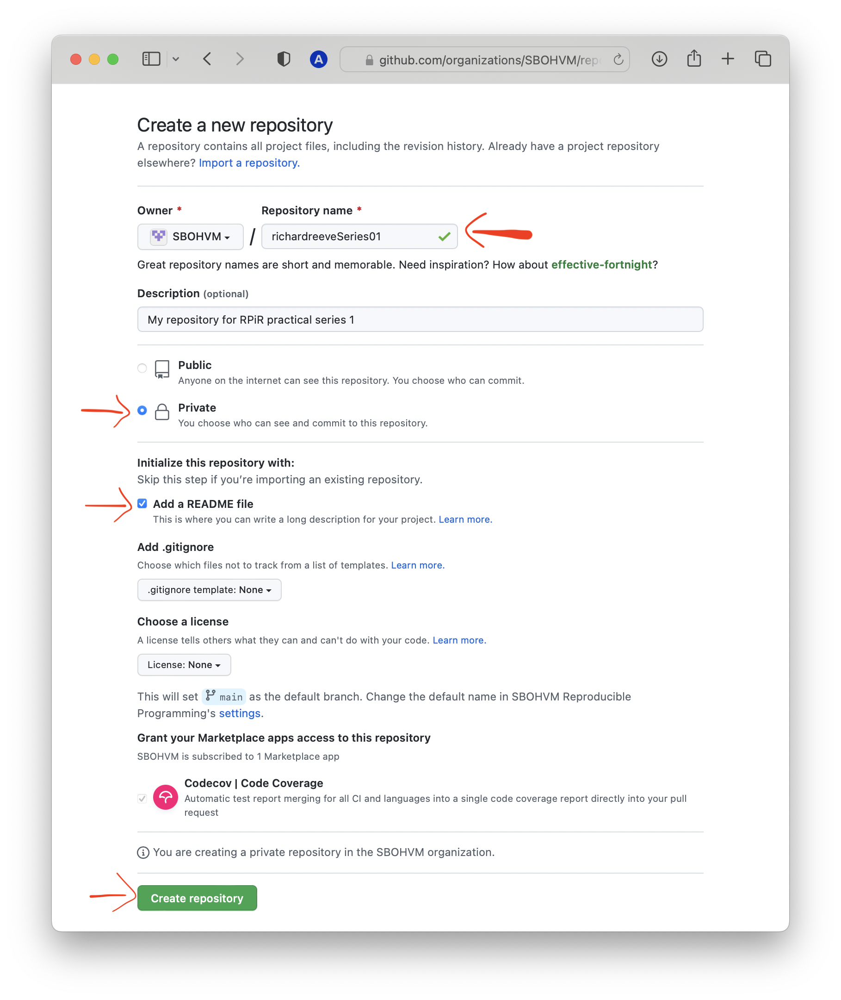
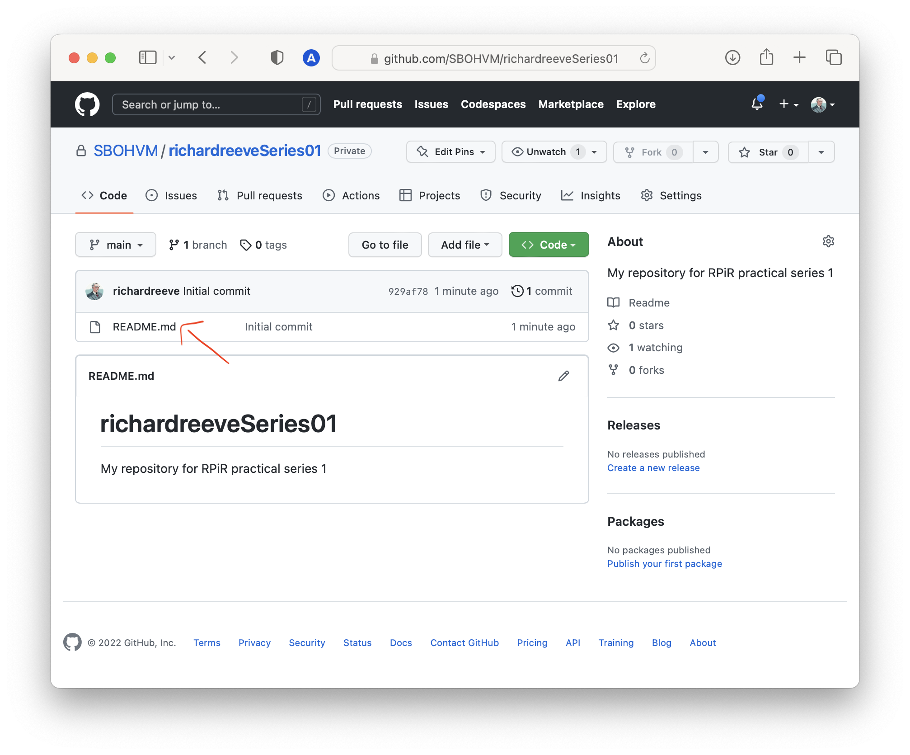

Creating a GitHub repository
February 12 2021
github.RmdWhenever you start a new project, you should consider creating a new repository on GitHub. Not only will you then be using version control, but it allows you to collaborate easily with others, as well as organising your workflow. This guide shows you how to create a new repository on GitHub.
To start off, go to the IBAHCM organisation (on GitHub). During this course, this is where you’ll be creating all of your repositories. Once you’re there, click on the green New button.

You should always choose a short, descriptive name for your repository. But in this case, to make it easier for us to identify you, please name your repository githubusername_0201 (where githubusername is your actualusername on GitHub, and 0201 corresponds to the first part of Practical series 2). Make sure you’re creating a Private repository, check the box to Initialize this repository with a README, then select Create repository.

Note that in Practical series 3 you’ll be writing a package… and when doing so it’s good practice for the name of your repository to match the name of your package. It’s important to be aware that the name of a package “should contain only (ASCII) letters, numbers and dot, have at least two characters and start with a letter and not end in a dot” (ref). Though very few package names include a dot.
Since we’re not working with packages just yet, including an underscore in the name of a repository is perfectly fine. Your GitHub repo should now contain a single README.md file look a bit like this:

If you want to learn more about creating projects (and using GitHub) in RStudio, click here.